VLA 后训练与能力扩展
RL / Force / Memory / WAM
在线强化学习、力觉闭环、长时视觉记忆、世界模型都做过
Overview
在具身智能创业公司完成 VLA 从数据采集、训练到真机部署的全流程落地，将异步推理与真机评测衔接为完整闭环；在线强化学习、力觉闭环与长时记忆等后训练方向均在真机上完成验证；研究方向亦覆盖机器人世界模型与 Loco-Manipulation，关注数据分布、模型架构与执行反馈的闭环。
VLA 后训练与能力扩展
RL / Force / Memory / WAM
在线强化学习、力觉闭环、长时视觉记忆、世界模型都做过
真机 Demo 任务
7 类
叠衣服 / 折纸盒 / 套柱 / 插孔 / 擦黑板 / 削黄瓜 / 插花
挑战杯 · 双臂操作算法
全国第 1 名
真机决赛 · 挑战之星｜RoboTwin 仿真赛第 2 名
工程能力
全栈
运控 / 数采 / 训练 / 推理 / 评测全链路独立搭建
Education
哈尔滨工业大学 Harbin Institute of Technology
硕士 · 控制科学与工程
2024.09 – 2027.06 哈尔滨，中国
研究方向 VLA / 具身智能 · 特等学业奖学金 ×2
哈尔滨工业大学 Harbin Institute of Technology
学士 · 自动化
2020.09 – 2024.06 哈尔滨，中国
学分绩 94.13 · 专业排名 7% · 本校保研 · CET-6
Internship
在某具身智能创业公司完成的五个方向，四个已在真机上验证，另一个在仿真中搭建数据工场与评测。
实习项目 · 2026.01 – 2026.07
独立从 0 到 1 搭建机械臂运控、数据采集处理、训练、推理、评估流程：基于 π0.5 和 piper 双臂，提升柔性[叠衣服] + 长程[折纸盒] demo 的成功率（100%）／吞吐量／流畅度，参展 2026 数字经济产业博览会。
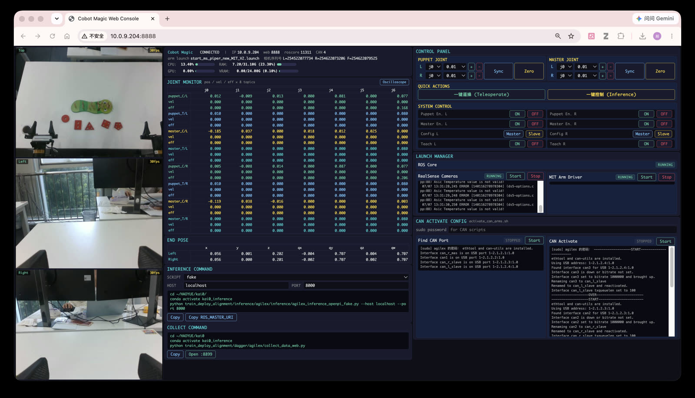
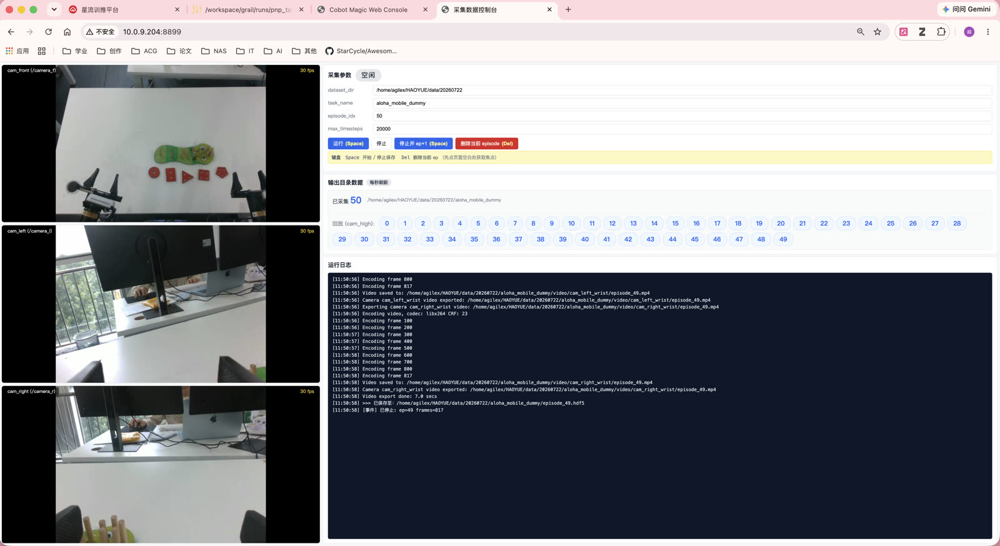
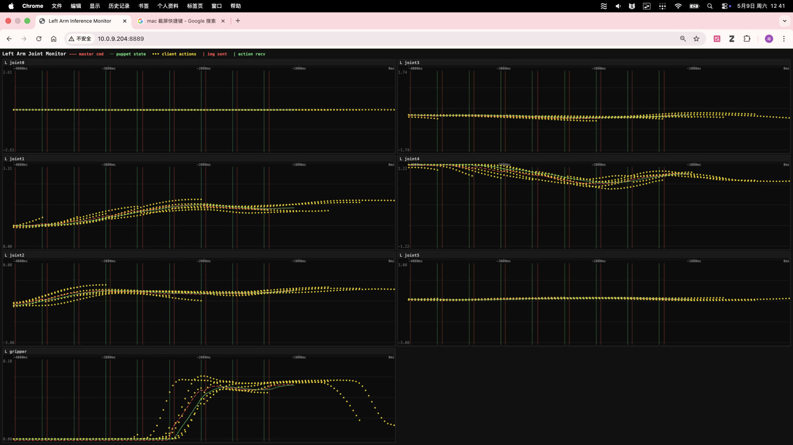
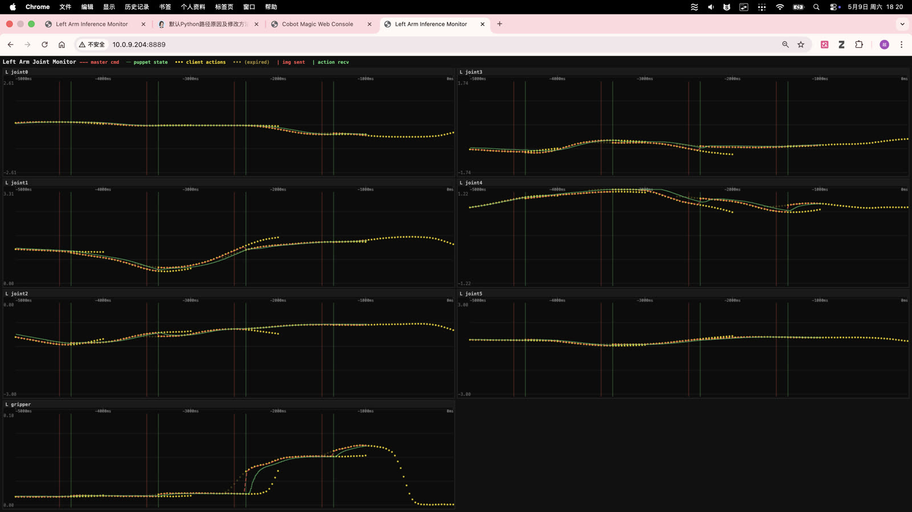
实习项目 · 2026.01 – 2026.07
针对 SFT 性能上限，基于 RLinf 框架和 RLToken 算法，使用约 100 episode，将 mm 级精细操作任务[套柱]成功率从 5% 提升至 100%，并在真机／仿真中对比了 DSRL、QGF、Flow-SDE、VINE 等算法。
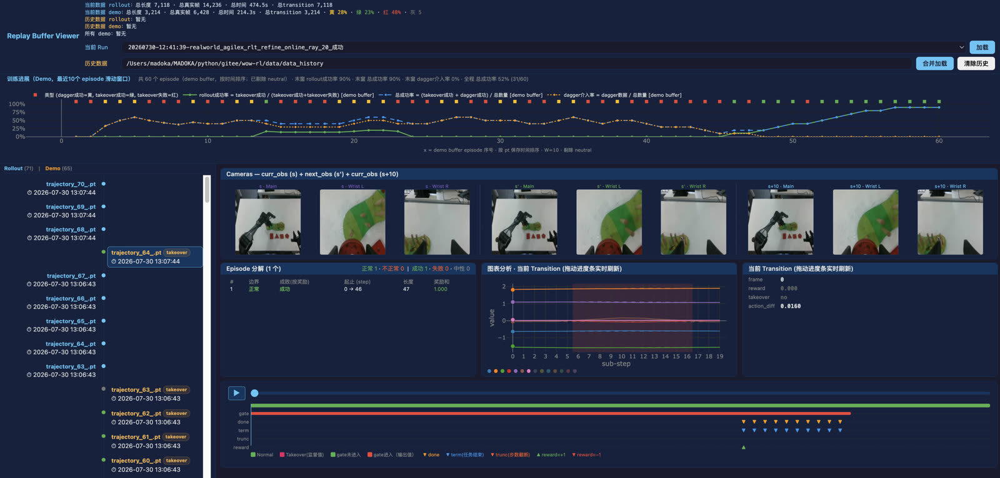
实习项目 · 2026.01 – 2026.07
针对需要前馈控制／接触丰富的任务[插入插座／擦黑板／削黄瓜]，在 UR 末端安装六维力传感器，构建 VLA 与导纳控制快慢双环，提升动作顺应速度、失败恢复速度、动作与接触力稳定性，避免碰撞与过载保护。
实习项目 · 2026.01 – 2026.07
针对需要记忆的任务[按演示顺序插花]，基于 π0.5 参考 NativeMEM 实现长时视觉记忆（max 25 s）。
实习项目 · 2026.01 – 2026.07
搭建 Isaac 仿真环境，参与模型架构迭代，提升无碰撞观测成功率 20%。
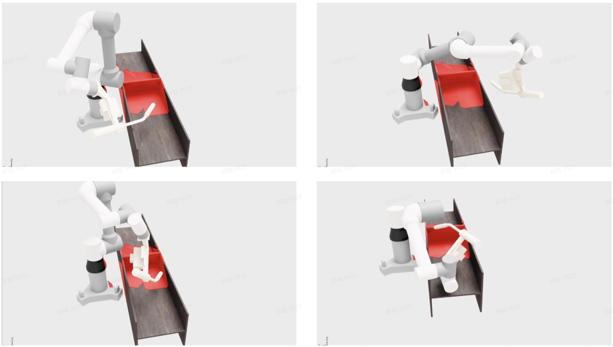
Personal
自主推进的世界模型与 Loco-Manipulation 研究。
个人项目 · 2026.07 – 至今
针对 Ego 数据以及 Loco-Manip 任务中的视角运动问题以及空间感知的需求，将 PointMap 和 PointFlow 作为核心世界动态表示方法，统一建模 RGB、Point 与 Action，使动作生成和未来状态预测共享时空表示。
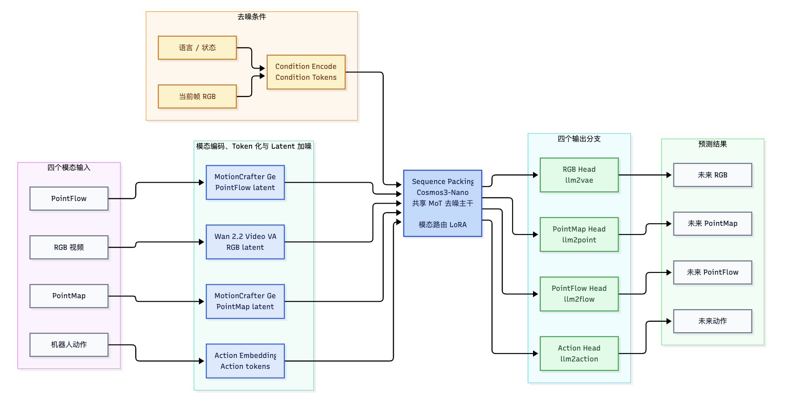
个人项目 · 2026.07 – 至今
参考 GRAIL 数据生成管线（3D 资产 → HOI 视频 → 4D 联合优化），产出人体全身移动操作轨迹，并重定向至 G1；以 Tracking-based RL 范式，在 SONIC 基座上开展基于状态的 RL，结合轨迹跟踪与任务奖励，训练多物体抓取通用策略，通过优化奖励设置提升成功率至 70% 左右，为上述统一模型产出演示数据。
Competition
端侧可部署的双臂操作算法，仿真与真机两条赛道。
核心技术成员 · 2025.07 – 2025.10
采用模仿学习算法，完成五个抓取任务，取得 RoboTwin 仿真赛第 2 名和真机决赛全国第 1 名（挑战之星）。
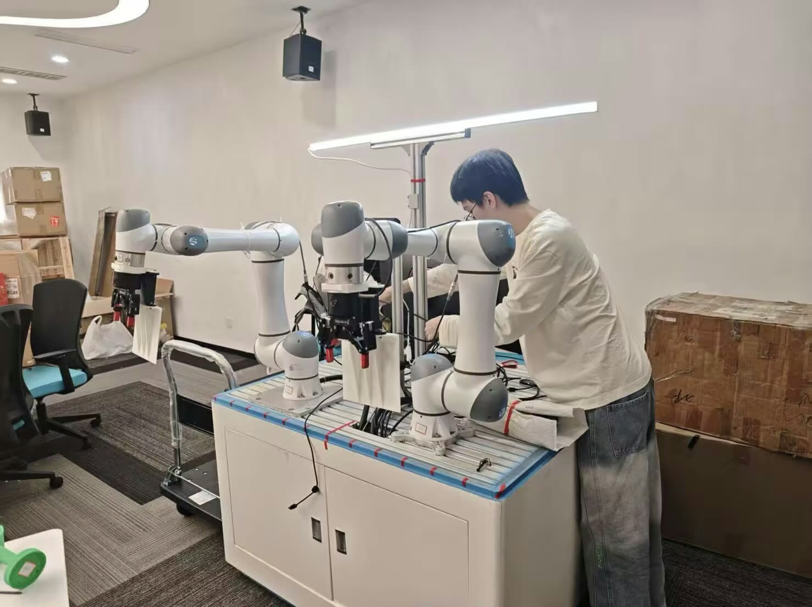
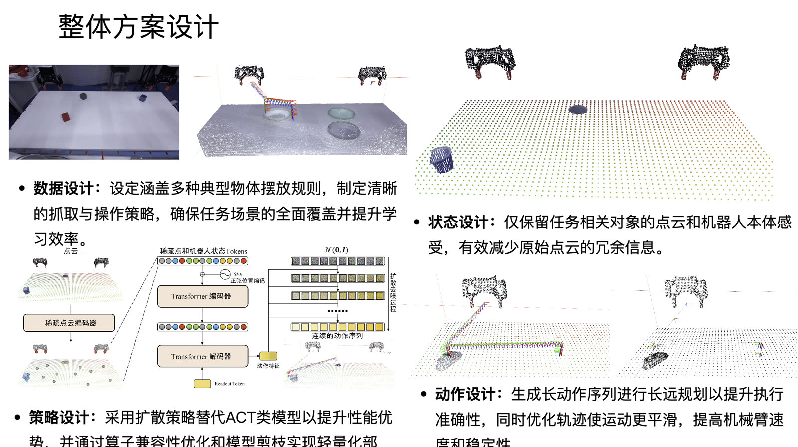
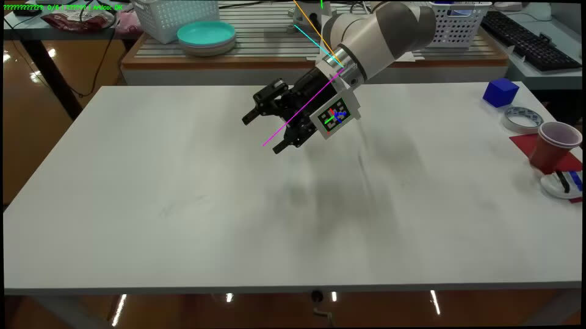
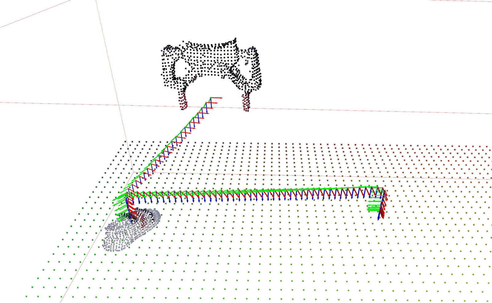
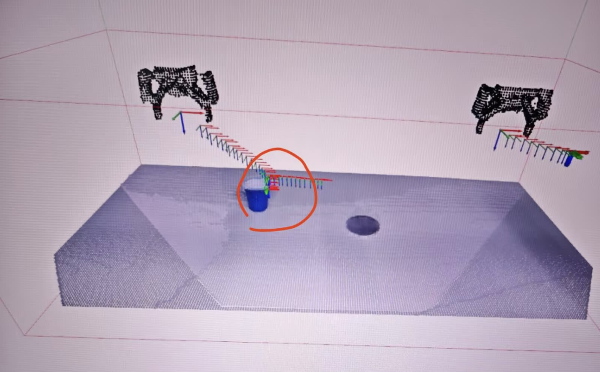
Honors
国家级竞赛奖项与学业荣誉。
2025
国家总冠军 · 挑战之星
挑战杯挑战赛“端侧可部署的双臂操作算法” · 真机决赛全国第 1 名 · RoboTwin 仿真赛第 2 名
2025
省级金奖
中国国际大学生创新创业大赛
2024
特等学业奖学金
哈尔滨工业大学 · 研究生
2023
国家二等奖
全国大学生智能汽车竞赛